Gose, Nara: things to do, food and stays
Gose · Nara
Gose
Highlighted on the Nara map.
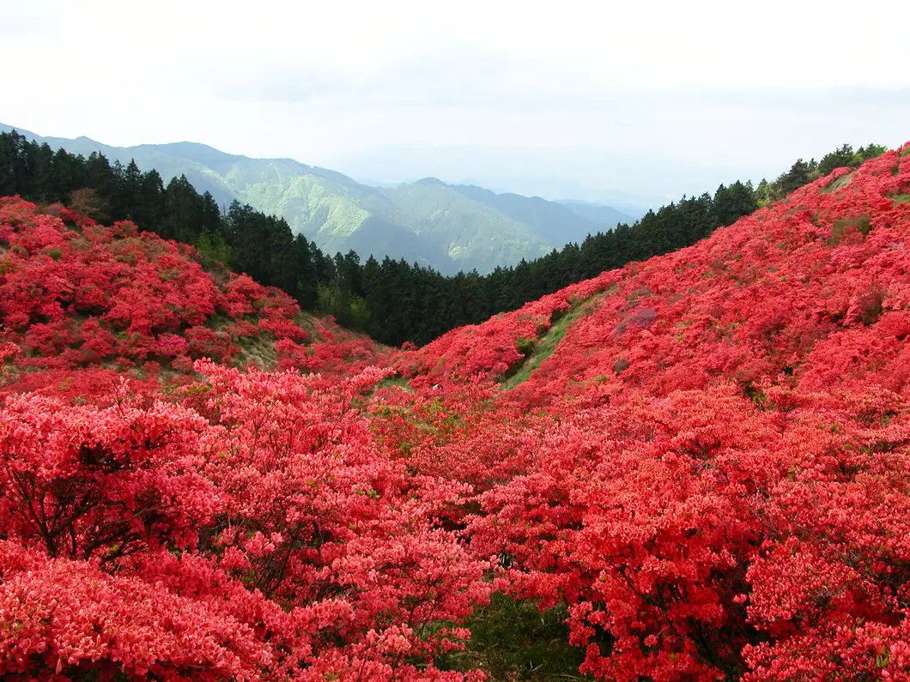
Stay
蘊 奈良 万年筆本舗（旧 RITA御所まち）
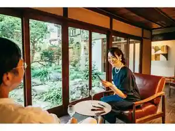
Un Nara Mannenhitsu Honpo (Kyu RITA Gosho Machi)
Inn in Nishi, Gose with a sauna.
宿チャリンコ
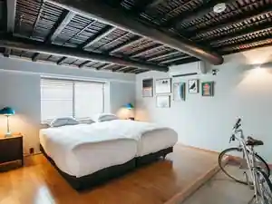
Yado Charinko
Inn in Kamokuchi, Gose with a sauna.
Dining
a plus
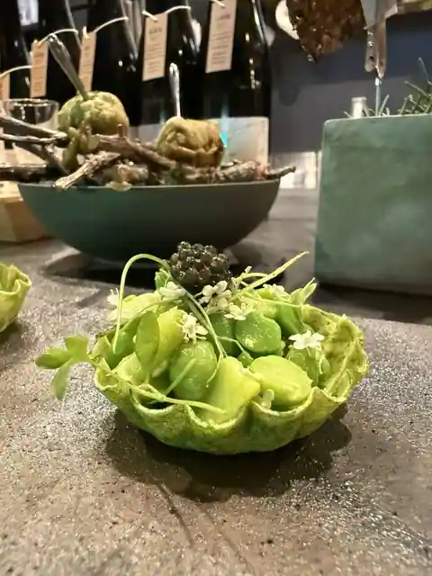
a plus
洋食屋ケムリ
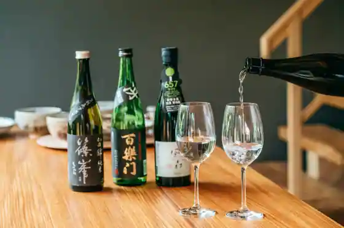
Yoshoku Ya Kemuri
ラーメン家 こゝろ
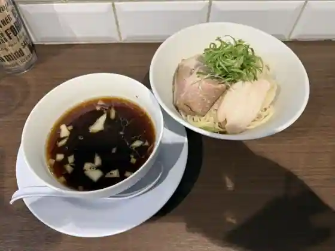
Ramen Ie Ko Ro
大和四季旬菜 白雲庵
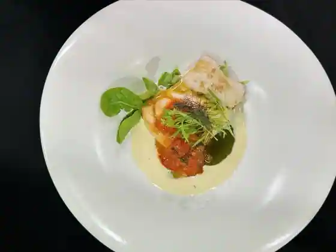
Yamato Shiki Jun Na Hakun Iori
わだきん
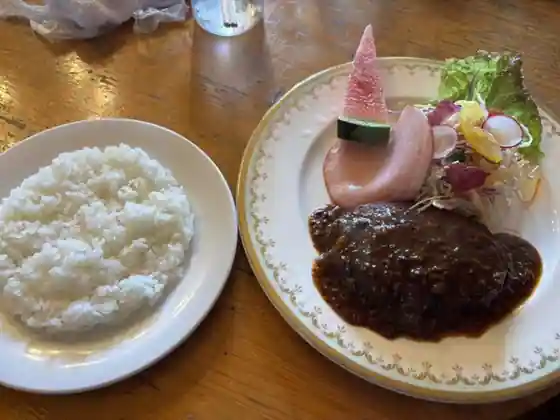
Wadakin
グリル ヨシダ
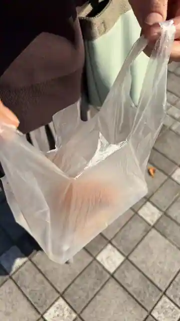
Grill Yoshida
新地 入船
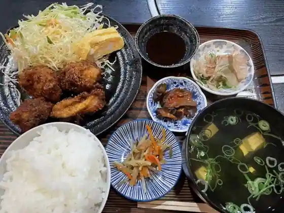
Shinchi Irifune
葛城高原ロッジ
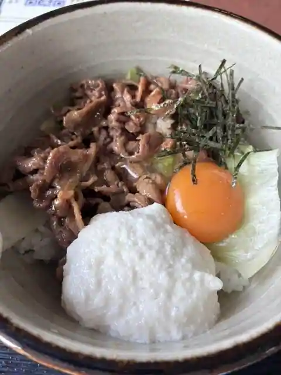
Katsuragi Kogen Lodge
そば小舎
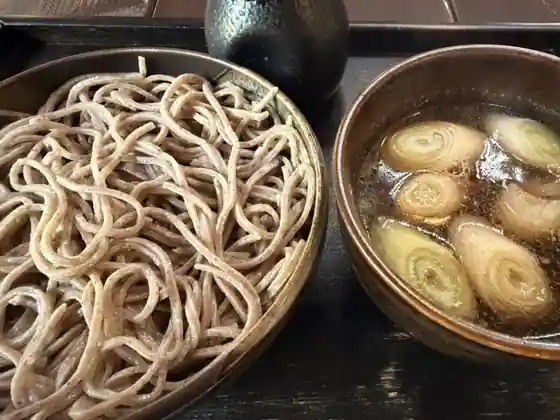
Soba Kodoneri
鮮魚回転すし さんきゅう 御所南店
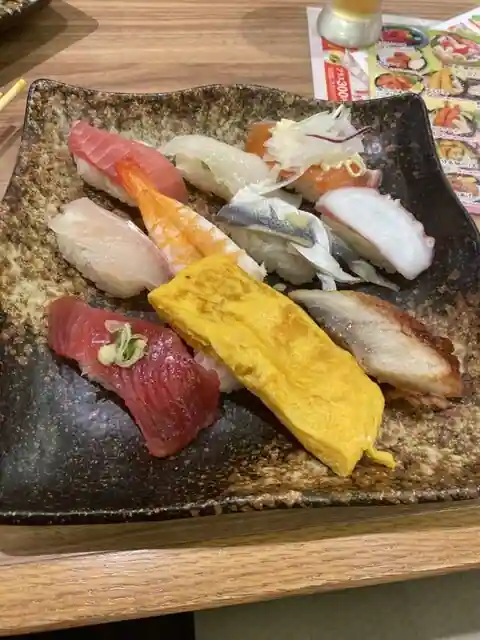
Sengyo Kaiten Sushi Sankyu Gosho Minami
千里うなぎ 御所南店
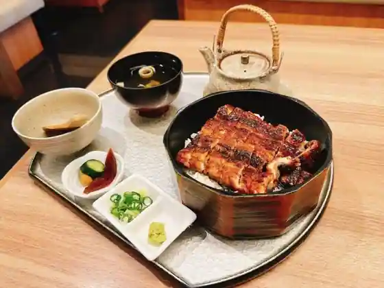
Senri Unagi Gosho Minami
梅本とうふ店
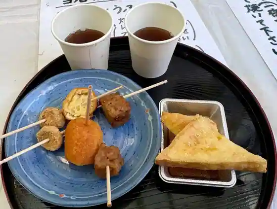
Umemoto Tofu
お食事処 鶴亀
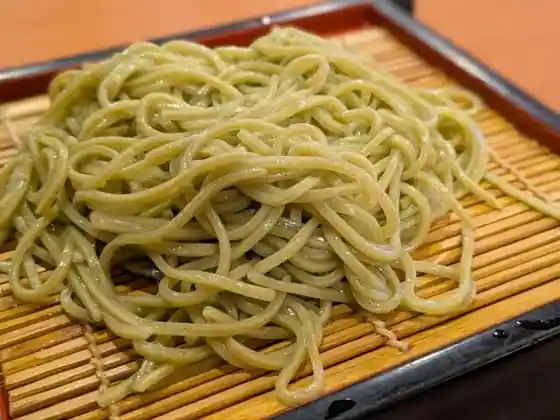
O Shokuji Tokoro Tsurukame
自然の里レストラン
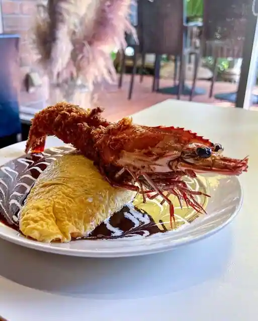
Shizen No Sato Restaurant
テガミ カフェ
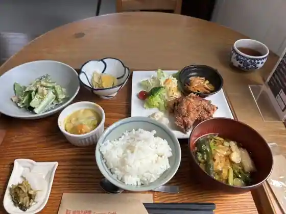
Tegami Cafe
モリソン万年筆&カフェ
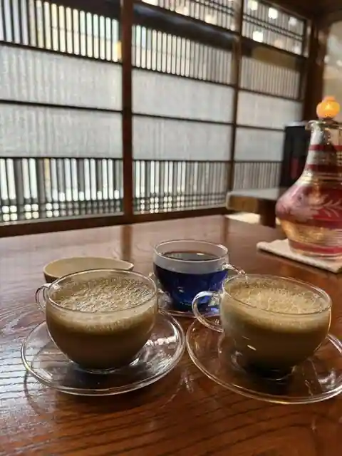
Morison Mannenhitsu & Cafe
柳屋
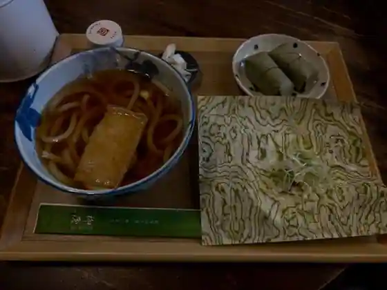
Yanagi Ya
白樺食堂
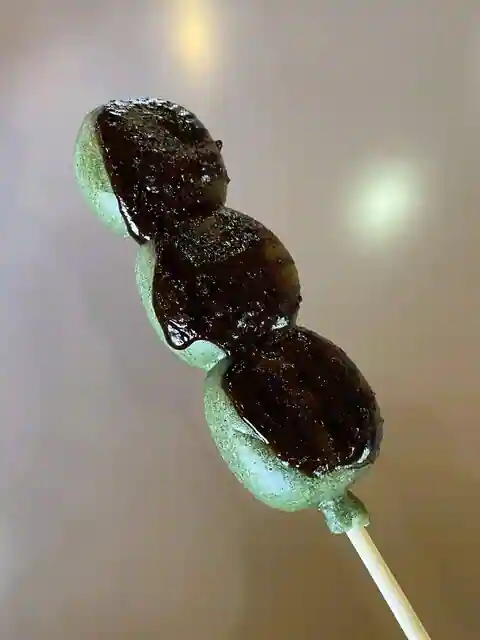
Shirakaba Shokudo
あけぼ乃
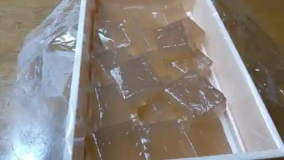
Akebo No
ほりのバーガー
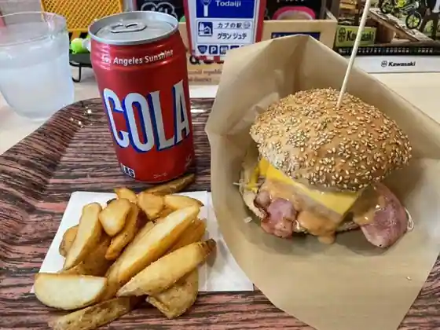
Horino Burger
川珈琲店 御所
Kawa Coffee Gosho
とんかつ専門店 食うか食われるか
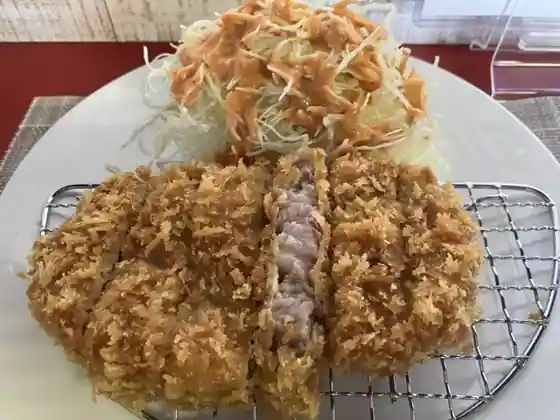
Tonkatsu Senmon Ku Ka Kuwa Reruka
マコモカフェ
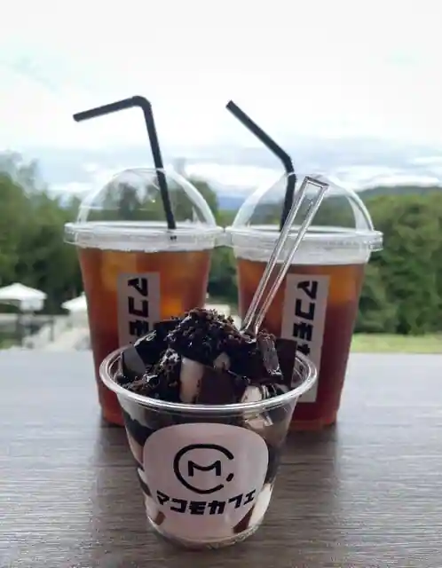
Makomo Cafe
Sights
Katsuragi Highlands
Katsuragi Za Hitokoto Shu Shrine
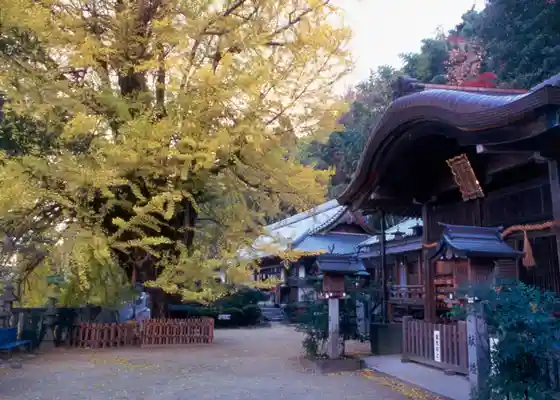
Kuhon Tera
Kamo Miyako Nami Shrine
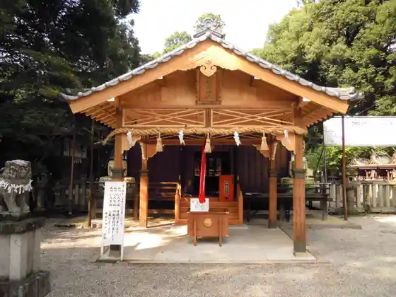
Katsuragi Kogen Rojji Campground
Kongo Yama
Gose
Funayado Tera
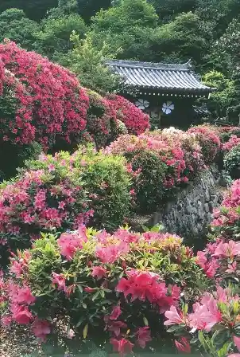
Suiheisha Museum
Taka Kamo Shrine
Tomei Gara Tenmangu Shrine
Kichijo Kusa Tera